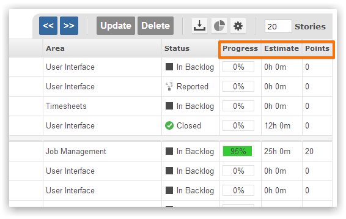
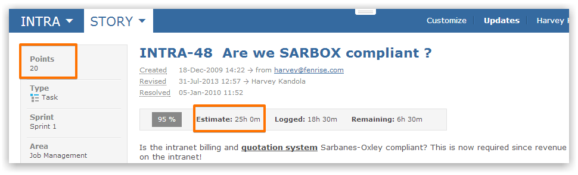
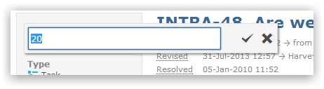

To aid sprint planning it can be beneficial to size up work items. Work sizing enables teams to determine which items can be realistically completed during a sprint.

Estimates are time based and specify how many hours and minutes are required to complete the item.
Points are another way to determine work effort - the more points an item has the the more time and effort is required to complete the item.
When viewing an item the Estimate and Points values can be seen.

You can click on the field to change the value.

NoteScreen, Project Template or Permissions can be used to determine who see Estimate and Points fields